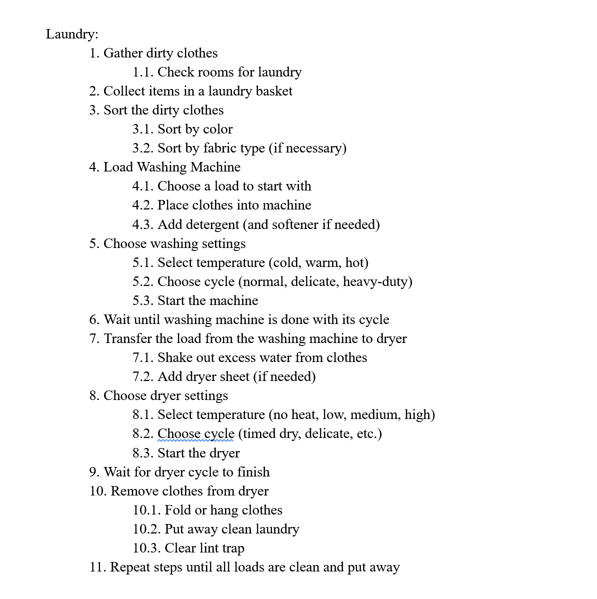
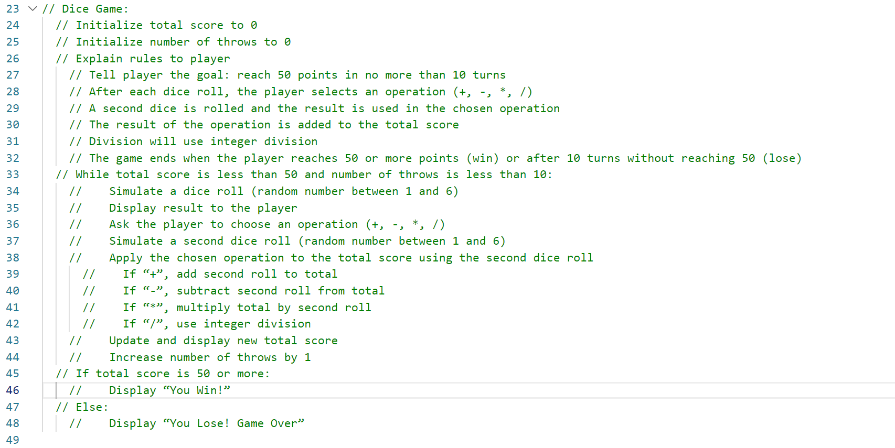

Lab 4 - Pseudocoding and Problem-solving
Challenge
The goal of this lab was to practice pseudocoding. The first task was to break down a common task into pseudocode, meaning each step had to be straightforward and follow a binary logic (the way computers do!); the second and third Tasks involved pseudocoding a simple game to emulate what it's like to lay down pseudocode for a project that would, from start to end, be based within a computer.
Problems
We ran into very few problems; off the top of my head, the only problems we ran into were with trying to decide which steps in each of the tasks in the lab would be its own individual step/procedure and which steps would be considered sub-tasks.
Reflection
The lab went fairly smoothly! Serene and I were able to divide the work evenly, and having another person to bounce ideas off of and to double check the accuracy of our work helps a lot.
Results
Task 1:
In Task 1, we were required to break down a common, everyday task into steps and procedures and write out a pseudocode for said steps and procedures. We chose to pseudocode the task of doing laundry.
Tasks 2 and 3:
In Tasks 2 and 3, we were instructed to pseudocode a simple computer game. Below is a screenshot of the pseudocode for our Dice Game.
